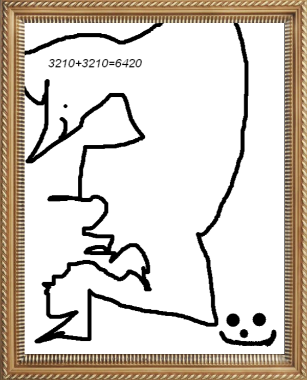

chaptire 1 - introduction - apré prlogue.
C'est l'histoire de paul .Il est archelologue mais plus
maintenant car sa femme devient enceinte. paul et
content mais ,, il ne pouvais plus travailer. Il decida
donc de faire un tableaude peinture, et il coloria le
tableau vite pour la nouvelle anée. quand c'est le
nouvel an, il passait du temps avec son epouses et
manger des aperitifs, pour paser le nouvel an bientot.
MAis avant que le nouvel an sois la, madame paul
comenssa a acoucher de jumeau. paul penser pase
que ce sont des jumeau, mais en faite si.
a suivre......🍎
A .
R .
B .
R .
E .
La peinture de Paul :

 |
🌐
|
|
🌐
|